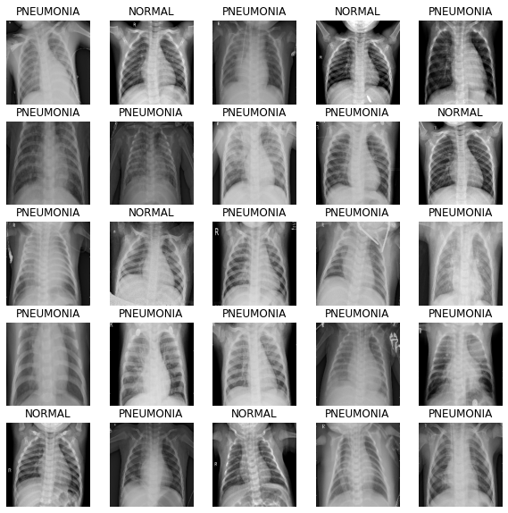
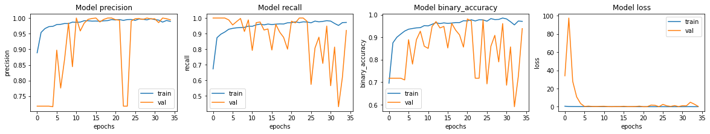
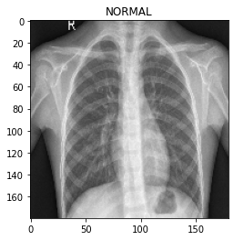

Phân loại viêm phổi trên TPU
Tác giả: Amy MiHyun Jang
Ngày tạo: 28/07/2020
Ngày sửa đổi lần cuối: 12/02/2024
Mô tả: Phân loại hình ảnh y tế trên TPU.
Xem trong Colab •
Nguồn GitHub
Giới thiệu + Thiết lập
Hướng dẫn này sẽ giải thích cách xây dựng mô hình phân loại hình ảnh X-quang để dự đoán liệu chụp X-quang có phát hiện bệnh viêm phổi hay không.
import re
import os
import random
import numpy as np
import pandas as pd
import tensorflow as tf
import matplotlib.pyplot as plt
try:
tpu = tf.distribute.cluster_resolver.TPUClusterResolver.connect()
print("Device:", tpu.master())
strategy = tf.distribute.TPUStrategy(tpu)
except:
strategy = tf.distribute.get_strategy()
print("Number of replicas:", strategy.num_replicas_in_sync)
Device: grpc://10.0.27.122:8470
INFO:tensorflow:Initializing the TPU system: grpc://10.0.27.122:8470
INFO:tensorflow:Initializing the TPU system: grpc://10.0.27.122:8470
INFO:tensorflow:Clearing out eager caches
INFO:tensorflow:Clearing out eager caches
INFO:tensorflow:Finished initializing TPU system.
INFO:tensorflow:Finished initializing TPU system.
WARNING:absl:[`tf.distribute.TPUStrategy`](https://www.tensorflow.org/api_docs/python/tf/distribute/TPUStrategy) is deprecated, please use the non experimental symbol [`tf.distribute.TPUStrategy`](https://www.tensorflow.org/api_docs/python/tf/distribute/TPUStrategy) instead.
INFO:tensorflow:Found TPU system:
INFO:tensorflow:Found TPU system:
INFO:tensorflow:*** Num TPU Cores: 8
INFO:tensorflow:*** Num TPU Cores: 8
INFO:tensorflow:*** Num TPU Workers: 1
INFO:tensorflow:*** Num TPU Workers: 1
INFO:tensorflow:*** Num TPU Cores Per Worker: 8
INFO:tensorflow:*** Num TPU Cores Per Worker: 8
INFO:tensorflow:*** Available Device: _DeviceAttributes(/job:localhost/replica:0/task:0/device:CPU:0, CPU, 0, 0)
INFO:tensorflow:*** Available Device: _DeviceAttributes(/job:localhost/replica:0/task:0/device:CPU:0, CPU, 0, 0)
INFO:tensorflow:*** Available Device: _DeviceAttributes(/job:localhost/replica:0/task:0/device:XLA_CPU:0, XLA_CPU, 0, 0)
INFO:tensorflow:*** Available Device: _DeviceAttributes(/job:localhost/replica:0/task:0/device:XLA_CPU:0, XLA_CPU, 0, 0)
INFO:tensorflow:*** Available Device: _DeviceAttributes(/job:worker/replica:0/task:0/device:CPU:0, CPU, 0, 0)
INFO:tensorflow:*** Available Device: _DeviceAttributes(/job:worker/replica:0/task:0/device:CPU:0, CPU, 0, 0)
INFO:tensorflow:*** Available Device: _DeviceAttributes(/job:worker/replica:0/task:0/device:TPU:0, TPU, 0, 0)
INFO:tensorflow:*** Available Device: _DeviceAttributes(/job:worker/replica:0/task:0/device:TPU:0, TPU, 0, 0)
INFO:tensorflow:*** Available Device: _DeviceAttributes(/job:worker/replica:0/task:0/device:TPU:1, TPU, 0, 0)
INFO:tensorflow:*** Available Device: _DeviceAttributes(/job:worker/replica:0/task:0/device:TPU:1, TPU, 0, 0)
INFO:tensorflow:*** Available Device: _DeviceAttributes(/job:worker/replica:0/task:0/device:TPU:2, TPU, 0, 0)
INFO:tensorflow:*** Available Device: _DeviceAttributes(/job:worker/replica:0/task:0/device:TPU:2, TPU, 0, 0)
INFO:tensorflow:*** Available Device: _DeviceAttributes(/job:worker/replica:0/task:0/device:TPU:3, TPU, 0, 0)
INFO:tensorflow:*** Available Device: _DeviceAttributes(/job:worker/replica:0/task:0/device:TPU:3, TPU, 0, 0)
INFO:tensorflow:*** Available Device: _DeviceAttributes(/job:worker/replica:0/task:0/device:TPU:4, TPU, 0, 0)
INFO:tensorflow:*** Available Device: _DeviceAttributes(/job:worker/replica:0/task:0/device:TPU:4, TPU, 0, 0)
INFO:tensorflow:*** Available Device: _DeviceAttributes(/job:worker/replica:0/task:0/device:TPU:5, TPU, 0, 0)
INFO:tensorflow:*** Available Device: _DeviceAttributes(/job:worker/replica:0/task:0/device:TPU:5, TPU, 0, 0)
INFO:tensorflow:*** Available Device: _DeviceAttributes(/job:worker/replica:0/task:0/device:TPU:6, TPU, 0, 0)
INFO:tensorflow:*** Available Device: _DeviceAttributes(/job:worker/replica:0/task:0/device:TPU:6, TPU, 0, 0)
INFO:tensorflow:*** Available Device: _DeviceAttributes(/job:worker/replica:0/task:0/device:TPU:7, TPU, 0, 0)
INFO:tensorflow:*** Available Device: _DeviceAttributes(/job:worker/replica:0/task:0/device:TPU:7, TPU, 0, 0)
INFO:tensorflow:*** Available Device: _DeviceAttributes(/job:worker/replica:0/task:0/device:TPU_SYSTEM:0, TPU_SYSTEM, 0, 0)
INFO:tensorflow:*** Available Device: _DeviceAttributes(/job:worker/replica:0/task:0/device:TPU_SYSTEM:0, TPU_SYSTEM, 0, 0)
INFO:tensorflow:*** Available Device: _DeviceAttributes(/job:worker/replica:0/task:0/device:XLA_CPU:0, XLA_CPU, 0, 0)
INFO:tensorflow:*** Available Device: _DeviceAttributes(/job:worker/replica:0/task:0/device:XLA_CPU:0, XLA_CPU, 0, 0)
Number of replicas: 8
Chúng tôi cần liên kết Google Cloud đến dữ liệu của mình để tải dữ liệu bằng TPU. Dưới đây, chúng tôi xác định các tham số cấu hình chính mà chúng tôi sẽ sử dụng trong ví dụ này. Để chạy trên TPU, ví dụ này phải ở trên Colab với thời gian chạy TPU được chọn.
AUTOTUNE = tf.data.AUTOTUNE
BATCH_SIZE = 25 * strategy.num_replicas_in_sync
IMAGE_SIZE = [180, 180]
CLASS_NAMES = ["NORMAL", "PNEUMONIA"]
Tải dữ liệu
Dữ liệu X-quang ngực mà chúng tôi sử dụng từ Cell chia dữ liệu thành các tệp đào tạo và kiểm tra. Trước tiên, hãy tải TFRecords đào tạo.
train_images = tf.data.TFRecordDataset(
"gs://download.tensorflow.org/data/ChestXRay2017/train/images.tfrec"
)
train_paths = tf.data.TFRecordDataset(
"gs://download.tensorflow.org/data/ChestXRay2017/train/paths.tfrec"
)
ds = tf.data.Dataset.zip((train_images, train_paths))
Chúng ta hãy đếm xem có bao nhiêu phim chụp X-quang ngực khỏe mạnh/bình thường và bao nhiêu phim chụp X-quang ngực viêm phổi:
COUNT_NORMAL = len(
[
filename
for filename in train_paths
if "NORMAL" in filename.numpy().decode("utf-8")
]
)
print("Normal images count in training set: " + str(COUNT_NORMAL))
COUNT_PNEUMONIA = len(
[
filename
for filename in train_paths
if "PNEUMONIA" in filename.numpy().decode("utf-8")
]
)
print("Pneumonia images count in training set: " + str(COUNT_PNEUMONIA))
Normal images count in training set: 1349
Pneumonia images count in training set: 3883
Lưu ý rằng có nhiều hình ảnh được phân loại là viêm phổi hơn bình thường. Điều này cho thấy chúng ta có sự mất cân bằng trong dữ liệu. Chúng ta sẽ hiệu chỉnh sự mất cân bằng này sau trong sổ tay của mình.
Chúng tôi muốn ánh xạ từng tên tệp vào cặp (hình ảnh, nhãn) tương ứng. Các phương pháp sau sẽ giúp chúng tôi thực hiện điều đó.
Vì chúng ta chỉ có hai nhãn, chúng ta sẽ mã hóa nhãn sao cho 1hoặc Truebiểu thị bệnh viêm phổi và 0hoặc Falsebiểu thị bình thường.
def get_label(file_path):
# convert the path to a list of path components
parts = tf.strings.split(file_path, "/")
# The second to last is the class-directory
if parts[-2] == "PNEUMONIA":
return 1
else:
return 0
def decode_img(img):
# convert the compressed string to a 3D uint8 tensor
img = tf.image.decode_jpeg(img, channels=3)
# resize the image to the desired size.
return tf.image.resize(img, IMAGE_SIZE)
def process_path(image, path):
label = get_label(path)
# load the raw data from the file as a string
img = decode_img(image)
return img, label
ds = ds.map(process_path, num_parallel_calls=AUTOTUNE)
Hãy chia dữ liệu thành tập dữ liệu đào tạo và tập dữ liệu xác thực.
ds = ds.shuffle(10000)
train_ds = ds.take(4200)
val_ds = ds.skip(4200)
Chúng ta hãy hình dung hình dạng của một cặp (hình ảnh, nhãn).
for image, label in train_ds.take(1):
print("Image shape: ", image.numpy().shape)
print("Label: ", label.numpy())
Image shape: (180, 180, 3)
Label: False
Tải và định dạng dữ liệu thử nghiệm.
test_images = tf.data.TFRecordDataset(
"gs://download.tensorflow.org/data/ChestXRay2017/test/images.tfrec"
)
test_paths = tf.data.TFRecordDataset(
"gs://download.tensorflow.org/data/ChestXRay2017/test/paths.tfrec"
)
test_ds = tf.data.Dataset.zip((test_images, test_paths))
test_ds = test_ds.map(process_path, num_parallel_calls=AUTOTUNE)
test_ds = test_ds.batch(BATCH_SIZE)
Hình dung tập dữ liệu
Đầu tiên, hãy sử dụng chức năng đệm trước để có thể lấy dữ liệu từ đĩa mà không khiến I/O bị chặn.
Xin lưu ý rằng các tập dữ liệu hình ảnh lớn không nên được lưu vào bộ nhớ đệm. Chúng tôi thực hiện điều này ở đây vì tập dữ liệu không quá lớn và chúng tôi muốn đào tạo trên TPU.
def prepare_for_training(ds, cache=True):
# This is a small dataset, only load it once, and keep it in memory.
# use `.cache(filename)` to cache preprocessing work for datasets that don't
# fit in memory.
if cache:
if isinstance(cache, str):
ds = ds.cache(cache)
else:
ds = ds.cache()
ds = ds.batch(BATCH_SIZE)
# `prefetch` lets the dataset fetch batches in the background while the model
# is training.
ds = ds.prefetch(buffer_size=AUTOTUNE)
return ds
Gọi lần lặp lại tiếp theo của dữ liệu đào tạo.
train_ds = prepare_for_training(train_ds)
val_ds = prepare_for_training(val_ds)
image_batch, label_batch = next(iter(train_ds))
Xác định phương pháp hiển thị hình ảnh trong lô.
def show_batch(image_batch, label_batch):
plt.figure(figsize=(10, 10))
for n in range(25):
ax = plt.subplot(5, 5, n + 1)
plt.imshow(image_batch[n] / 255)
if label_batch[n]:
plt.title("PNEUMONIA")
else:
plt.title("NORMAL")
plt.axis("off")
As the method takes in NumPy arrays as its parameters, call the numpy function on the batches to return the tensor in NumPy array form.
show_batch(image_batch.numpy(), label_batch.numpy())

Build the CNN
To make our model more modular and easier to understand, let's define some blocks. As we're building a convolution neural network, we'll create a convolution block and a dense layer block.
The architecture for this CNN has been inspired by this article.
import os
os.environ['KERAS_BACKEND'] = 'tensorflow'
import keras
from keras import layers
def conv_block(filters, inputs):
x = layers.SeparableConv2D(filters, 3, activation="relu", padding="same")(inputs)
x = layers.SeparableConv2D(filters, 3, activation="relu", padding="same")(x)
x = layers.BatchNormalization()(x)
outputs = layers.MaxPool2D()(x)
return outputs
def dense_block(units, dropout_rate, inputs):
x = layers.Dense(units, activation="relu")(inputs)
x = layers.BatchNormalization()(x)
outputs = layers.Dropout(dropout_rate)(x)
return outputs
The following method will define the function to build our model for us.
The images originally have values that range from [0, 255]. CNNs work better with smaller numbers so we will scale this down for our input.
The Dropout layers are important, as they
reduce the likelikhood of the model overfitting. We want to end the model with a Dense
layer with one node, as this will be the binary output that determines if an X-ray shows
presence of pneumonia.
def build_model():
inputs = keras.Input(shape=(IMAGE_SIZE[0], IMAGE_SIZE[1], 3))
x = layers.Rescaling(1.0 / 255)(inputs)
x = layers.Conv2D(16, 3, activation="relu", padding="same")(x)
x = layers.Conv2D(16, 3, activation="relu", padding="same")(x)
x = layers.MaxPool2D()(x)
x = conv_block(32, x)
x = conv_block(64, x)
x = conv_block(128, x)
x = layers.Dropout(0.2)(x)
x = conv_block(256, x)
x = layers.Dropout(0.2)(x)
x = layers.Flatten()(x)
x = dense_block(512, 0.7, x)
x = dense_block(128, 0.5, x)
x = dense_block(64, 0.3, x)
outputs = layers.Dense(1, activation="sigmoid")(x)
model = keras.Model(inputs=inputs, outputs=outputs)
return model
Correct for data imbalance
We saw earlier in this example that the data was imbalanced, with more images classified as pneumonia than normal. We will correct for that by using class weighting:
initial_bias = np.log([COUNT_PNEUMONIA / COUNT_NORMAL])
print("Initial bias: {:.5f}".format(initial_bias[0]))
TRAIN_IMG_COUNT = COUNT_NORMAL + COUNT_PNEUMONIA
weight_for_0 = (1 / COUNT_NORMAL) * (TRAIN_IMG_COUNT) / 2.0
weight_for_1 = (1 / COUNT_PNEUMONIA) * (TRAIN_IMG_COUNT) / 2.0
class_weight = {0: weight_for_0, 1: weight_for_1}
print("Weight for class 0: {:.2f}".format(weight_for_0))
print("Weight for class 1: {:.2f}".format(weight_for_1))
Initial bias: 1.05724
Weight for class 0: 1.94
Weight for class 1: 0.67
The weight for class 0 (Normal) is a lot higher than the weight for class 1
(Pneumonia). Because there are less normal images, each normal image will be weighted
more to balance the data as the CNN works best when the training data is balanced.
Train the model
Defining callbacks
The checkpoint callback saves the best weights of the model, so next time we want to use the model, we do not have to spend time training it. The early stopping callback stops the training process when the model starts becoming stagnant, or even worse, when the model starts overfitting.
checkpoint_cb = keras.callbacks.ModelCheckpoint("xray_model.keras", save_best_only=True)
early_stopping_cb = keras.callbacks.EarlyStopping(
patience=10, restore_best_weights=True
)
We also want to tune our learning rate. Too high of a learning rate will cause the model to diverge. Too small of a learning rate will cause the model to be too slow. We implement the exponential learning rate scheduling method below.
initial_learning_rate = 0.015
lr_schedule = keras.optimizers.schedules.ExponentialDecay(
initial_learning_rate, decay_steps=100000, decay_rate=0.96, staircase=True
)
Fit the model
For our metrics, we want to include precision and recall as they will provide use with a more informed picture of how good our model is. Accuracy tells us what fraction of the labels is correct. Since our data is not balanced, accuracy might give a skewed sense of a good model (i.e. a model that always predicts PNEUMONIA will be 74% accurate but is not a good model).
Precision is the number of true positives (TP) over the sum of TP and false positives (FP). It shows what fraction of labeled positives are actually correct.
Recall is the number of TP over the sum of TP and false negatves (FN). It shows what fraction of actual positives are correct.
Since there are only two possible labels for the image, we will be using the binary crossentropy loss. When we fit the model, remember to specify the class weights, which we defined earlier. Because we are using a TPU, training will be quick - less than 2 minutes.
with strategy.scope():
model = build_model()
METRICS = [
keras.metrics.BinaryAccuracy(),
keras.metrics.Precision(name="precision"),
keras.metrics.Recall(name="recall"),
]
model.compile(
optimizer=keras.optimizers.Adam(learning_rate=lr_schedule),
loss="binary_crossentropy",
metrics=METRICS,
)
history = model.fit(
train_ds,
epochs=100,
validation_data=val_ds,
class_weight=class_weight,
callbacks=[checkpoint_cb, early_stopping_cb],
)
Epoch 1/100
WARNING:tensorflow:From /usr/local/lib/python3.6/dist-packages/tensorflow/python/data/ops/multi_device_iterator_ops.py:601: get_next_as_optional (from tensorflow.python.data.ops.iterator_ops) is deprecated and will be removed in a future version.
Instructions for updating:
Use `tf.data.Iterator.get_next_as_optional()` instead.
WARNING:tensorflow:From /usr/local/lib/python3.6/dist-packages/tensorflow/python/data/ops/multi_device_iterator_ops.py:601: get_next_as_optional (from tensorflow.python.data.ops.iterator_ops) is deprecated and will be removed in a future version.
Instructions for updating:
Use `tf.data.Iterator.get_next_as_optional()` instead.
21/21 [==============================] - 12s 568ms/step - loss: 0.5857 - binary_accuracy: 0.6960 - precision: 0.8887 - recall: 0.6733 - val_loss: 34.0149 - val_binary_accuracy: 0.7180 - val_precision: 0.7180 - val_recall: 1.0000
Epoch 2/100
21/21 [==============================] - 3s 128ms/step - loss: 0.2916 - binary_accuracy: 0.8755 - precision: 0.9540 - recall: 0.8738 - val_loss: 97.5194 - val_binary_accuracy: 0.7180 - val_precision: 0.7180 - val_recall: 1.0000
Epoch 3/100
21/21 [==============================] - 4s 167ms/step - loss: 0.2384 - binary_accuracy: 0.9002 - precision: 0.9663 - recall: 0.8964 - val_loss: 27.7902 - val_binary_accuracy: 0.7180 - val_precision: 0.7180 - val_recall: 1.0000
Epoch 4/100
21/21 [==============================] - 4s 173ms/step - loss: 0.2046 - binary_accuracy: 0.9145 - precision: 0.9725 - recall: 0.9102 - val_loss: 10.8302 - val_binary_accuracy: 0.7180 - val_precision: 0.7180 - val_recall: 1.0000
Epoch 5/100
21/21 [==============================] - 4s 174ms/step - loss: 0.1841 - binary_accuracy: 0.9279 - precision: 0.9733 - recall: 0.9279 - val_loss: 3.5860 - val_binary_accuracy: 0.7103 - val_precision: 0.7162 - val_recall: 0.9879
Epoch 6/100
21/21 [==============================] - 4s 185ms/step - loss: 0.1600 - binary_accuracy: 0.9362 - precision: 0.9791 - recall: 0.9337 - val_loss: 0.3014 - val_binary_accuracy: 0.8895 - val_precision: 0.8973 - val_recall: 0.9555
Epoch 7/100
21/21 [==============================] - 3s 130ms/step - loss: 0.1567 - binary_accuracy: 0.9393 - precision: 0.9798 - recall: 0.9372 - val_loss: 0.6763 - val_binary_accuracy: 0.7810 - val_precision: 0.7760 - val_recall: 0.9771
Epoch 8/100
21/21 [==============================] - 3s 131ms/step - loss: 0.1532 - binary_accuracy: 0.9421 - precision: 0.9825 - recall: 0.9385 - val_loss: 0.3169 - val_binary_accuracy: 0.8895 - val_precision: 0.8684 - val_recall: 0.9973
Epoch 9/100
21/21 [==============================] - 4s 184ms/step - loss: 0.1457 - binary_accuracy: 0.9431 - precision: 0.9822 - recall: 0.9401 - val_loss: 0.2064 - val_binary_accuracy: 0.9273 - val_precision: 0.9840 - val_recall: 0.9136
Epoch 10/100
21/21 [==============================] - 3s 132ms/step - loss: 0.1201 - binary_accuracy: 0.9521 - precision: 0.9869 - recall: 0.9479 - val_loss: 0.4364 - val_binary_accuracy: 0.8605 - val_precision: 0.8443 - val_recall: 0.9879
Epoch 11/100
21/21 [==============================] - 3s 127ms/step - loss: 0.1200 - binary_accuracy: 0.9510 - precision: 0.9863 - recall: 0.9469 - val_loss: 0.5197 - val_binary_accuracy: 0.8508 - val_precision: 1.0000 - val_recall: 0.7922
Epoch 12/100
21/21 [==============================] - 4s 186ms/step - loss: 0.1077 - binary_accuracy: 0.9581 - precision: 0.9870 - recall: 0.9559 - val_loss: 0.1349 - val_binary_accuracy: 0.9486 - val_precision: 0.9587 - val_recall: 0.9703
Epoch 13/100
21/21 [==============================] - 4s 173ms/step - loss: 0.0918 - binary_accuracy: 0.9650 - precision: 0.9914 - recall: 0.9611 - val_loss: 0.0926 - val_binary_accuracy: 0.9700 - val_precision: 0.9837 - val_recall: 0.9744
Epoch 14/100
21/21 [==============================] - 3s 130ms/step - loss: 0.0996 - binary_accuracy: 0.9612 - precision: 0.9913 - recall: 0.9559 - val_loss: 0.1811 - val_binary_accuracy: 0.9419 - val_precision: 0.9956 - val_recall: 0.9231
Epoch 15/100
21/21 [==============================] - 3s 129ms/step - loss: 0.0898 - binary_accuracy: 0.9643 - precision: 0.9901 - recall: 0.9614 - val_loss: 0.1525 - val_binary_accuracy: 0.9486 - val_precision: 0.9986 - val_recall: 0.9298
Epoch 16/100
21/21 [==============================] - 3s 128ms/step - loss: 0.0941 - binary_accuracy: 0.9621 - precision: 0.9904 - recall: 0.9582 - val_loss: 0.5101 - val_binary_accuracy: 0.8527 - val_precision: 1.0000 - val_recall: 0.7949
Epoch 17/100
21/21 [==============================] - 3s 125ms/step - loss: 0.0798 - binary_accuracy: 0.9636 - precision: 0.9897 - recall: 0.9607 - val_loss: 0.1239 - val_binary_accuracy: 0.9622 - val_precision: 0.9875 - val_recall: 0.9595
Epoch 18/100
21/21 [==============================] - 3s 126ms/step - loss: 0.0821 - binary_accuracy: 0.9657 - precision: 0.9911 - recall: 0.9623 - val_loss: 0.1597 - val_binary_accuracy: 0.9322 - val_precision: 0.9956 - val_recall: 0.9096
Epoch 19/100
21/21 [==============================] - 3s 143ms/step - loss: 0.0800 - binary_accuracy: 0.9657 - precision: 0.9917 - recall: 0.9617 - val_loss: 0.2538 - val_binary_accuracy: 0.9109 - val_precision: 1.0000 - val_recall: 0.8758
Epoch 20/100
21/21 [==============================] - 3s 127ms/step - loss: 0.0605 - binary_accuracy: 0.9738 - precision: 0.9950 - recall: 0.9694 - val_loss: 0.6594 - val_binary_accuracy: 0.8566 - val_precision: 1.0000 - val_recall: 0.8003
Epoch 21/100
21/21 [==============================] - 4s 167ms/step - loss: 0.0726 - binary_accuracy: 0.9733 - precision: 0.9937 - recall: 0.9701 - val_loss: 0.0593 - val_binary_accuracy: 0.9816 - val_precision: 0.9945 - val_recall: 0.9798
Epoch 22/100
21/21 [==============================] - 3s 126ms/step - loss: 0.0577 - binary_accuracy: 0.9783 - precision: 0.9951 - recall: 0.9755 - val_loss: 0.1087 - val_binary_accuracy: 0.9729 - val_precision: 0.9931 - val_recall: 0.9690
Epoch 23/100
21/21 [==============================] - 3s 125ms/step - loss: 0.0652 - binary_accuracy: 0.9729 - precision: 0.9924 - recall: 0.9707 - val_loss: 1.8465 - val_binary_accuracy: 0.7180 - val_precision: 0.7180 - val_recall: 1.0000
Epoch 24/100
21/21 [==============================] - 3s 124ms/step - loss: 0.0538 - binary_accuracy: 0.9783 - precision: 0.9951 - recall: 0.9755 - val_loss: 1.5769 - val_binary_accuracy: 0.7180 - val_precision: 0.7180 - val_recall: 1.0000
Epoch 25/100
21/21 [==============================] - 4s 167ms/step - loss: 0.0549 - binary_accuracy: 0.9776 - precision: 0.9954 - recall: 0.9743 - val_loss: 0.0590 - val_binary_accuracy: 0.9777 - val_precision: 0.9904 - val_recall: 0.9784
Epoch 26/100
21/21 [==============================] - 3s 131ms/step - loss: 0.0677 - binary_accuracy: 0.9719 - precision: 0.9924 - recall: 0.9694 - val_loss: 2.6008 - val_binary_accuracy: 0.6928 - val_precision: 0.9977 - val_recall: 0.5735
Epoch 27/100
21/21 [==============================] - 3s 127ms/step - loss: 0.0469 - binary_accuracy: 0.9833 - precision: 0.9971 - recall: 0.9804 - val_loss: 1.0184 - val_binary_accuracy: 0.8605 - val_precision: 0.9983 - val_recall: 0.8070
Epoch 28/100
21/21 [==============================] - 3s 126ms/step - loss: 0.0501 - binary_accuracy: 0.9790 - precision: 0.9961 - recall: 0.9755 - val_loss: 0.3737 - val_binary_accuracy: 0.9089 - val_precision: 0.9954 - val_recall: 0.8772
Epoch 29/100
21/21 [==============================] - 3s 128ms/step - loss: 0.0548 - binary_accuracy: 0.9798 - precision: 0.9941 - recall: 0.9784 - val_loss: 1.2928 - val_binary_accuracy: 0.7907 - val_precision: 1.0000 - val_recall: 0.7085
Epoch 30/100
21/21 [==============================] - 3s 129ms/step - loss: 0.0370 - binary_accuracy: 0.9860 - precision: 0.9980 - recall: 0.9829 - val_loss: 0.1370 - val_binary_accuracy: 0.9612 - val_precision: 0.9972 - val_recall: 0.9487
Epoch 31/100
21/21 [==============================] - 3s 125ms/step - loss: 0.0585 - binary_accuracy: 0.9819 - precision: 0.9951 - recall: 0.9804 - val_loss: 1.1955 - val_binary_accuracy: 0.6870 - val_precision: 0.9976 - val_recall: 0.5655
Epoch 32/100
21/21 [==============================] - 3s 140ms/step - loss: 0.0813 - binary_accuracy: 0.9695 - precision: 0.9934 - recall: 0.9652 - val_loss: 1.0394 - val_binary_accuracy: 0.8576 - val_precision: 0.9853 - val_recall: 0.8138
Epoch 33/100
21/21 [==============================] - 3s 128ms/step - loss: 0.1111 - binary_accuracy: 0.9555 - precision: 0.9870 - recall: 0.9524 - val_loss: 4.9438 - val_binary_accuracy: 0.5911 - val_precision: 1.0000 - val_recall: 0.4305
Epoch 34/100
21/21 [==============================] - 3s 130ms/step - loss: 0.0680 - binary_accuracy: 0.9726 - precision: 0.9921 - recall: 0.9707 - val_loss: 2.8822 - val_binary_accuracy: 0.7267 - val_precision: 0.9978 - val_recall: 0.6208
Epoch 35/100
21/21 [==============================] - 4s 187ms/step - loss: 0.0784 - binary_accuracy: 0.9712 - precision: 0.9892 - recall: 0.9717 - val_loss: 0.3940 - val_binary_accuracy: 0.9390 - val_precision: 0.9942 - val_recall: 0.9204
Visualizing model performance
Hãy vẽ biểu đồ độ chính xác và mất mát của mô hình cho tập huấn luyện và tập xác thực. Lưu ý rằng không có hạt giống ngẫu nhiên nào được chỉ định cho sổ ghi chép này. Đối với sổ ghi chép của bạn, có thể có một chút sai lệch.
fig, ax = plt.subplots(1, 4, figsize=(20, 3))
ax = ax.ravel()
for i, met in enumerate(["precision", "recall", "binary_accuracy", "loss"]):
ax[i].plot(history.history[met])
ax[i].plot(history.history["val_" + met])
ax[i].set_title("Model {}".format(met))
ax[i].set_xlabel("epochs")
ax[i].set_ylabel(met)
ax[i].legend(["train", "val"])

Chúng ta thấy rằng độ chính xác của mô hình của chúng tôi là khoảng 95%.
Dự đoán và đánh giá kết quả
Hãy cùng đánh giá mô hình trên dữ liệu thử nghiệm của chúng ta!
model.evaluate(test_ds, return_dict=True)
4/4 [==============================] - 3s 708ms/step - loss: 0.9718 - binary_accuracy: 0.7901 - precision: 0.7524 - recall: 0.9897
{'binary_accuracy': 0.7900640964508057,
'loss': 0.9717951416969299,
'precision': 0.752436637878418,
'recall': 0.9897436499595642}
Chúng tôi thấy rằng độ chính xác của chúng tôi trên dữ liệu thử nghiệm thấp hơn độ chính xác của tập xác thực của chúng tôi. Điều này có thể chỉ ra sự quá khớp.
Khả năng nhớ lại của chúng tôi lớn hơn độ chính xác, cho thấy hầu hết các hình ảnh viêm phổi đều được xác định chính xác nhưng một số hình ảnh bình thường lại bị xác định sai. Chúng ta nên hướng tới mục tiêu tăng độ chính xác.
for image, label in test_ds.take(1):
plt.imshow(image[0] / 255.0)
plt.title(CLASS_NAMES[label[0].numpy()])
prediction = model.predict(test_ds.take(1))[0]
scores = [1 - prediction, prediction]
for score, name in zip(scores, CLASS_NAMES):
print("This image is %.2f percent %s" % ((100 * score), name))
/usr/local/lib/python3.6/dist-packages/ipykernel_launcher.py:3: DeprecationWarning: In future, it will be an error for 'np.bool_' scalars to be interpreted as an index
This is separate from the ipykernel package so we can avoid doing imports until
This image is 47.19 percent NORMAL
This image is 52.81 percent PNEUMONIA
